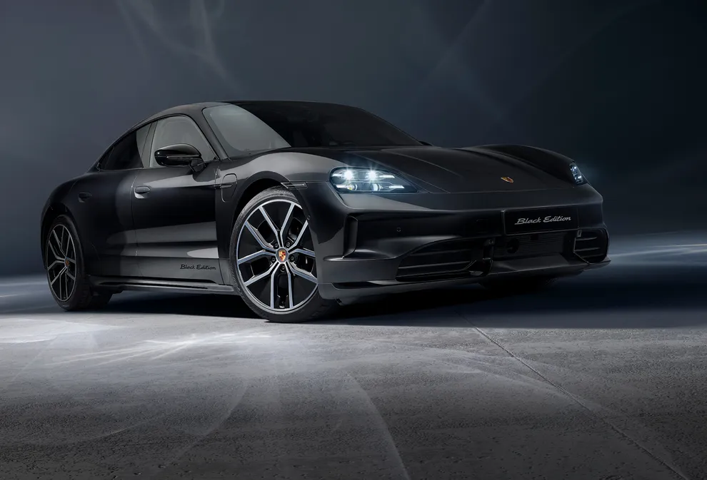

2015
Annoncée au salon de Francfort comme Porsche Mission E

La Porsche Taycan est la première voiture 100 % électrique de la marque allemande, alliant performances sportives, design élégant et technologies de pointe. Fidèle à l’ADN Porsche, elle offre des accélérations impressionnantes, une tenue de route précise et un intérieur luxueux axé sur l’innovation et le confort. La Taycan incarne la vision moderne de Porsche, où électrification rime avec sensations de conduite. Son nom, Taycan, signifie « cheval fougueux », un symbole de puissance, d’énergie et de dynamisme, parfaitement en accord avec l’esprit de la marque 🐎⚡.
Annoncée au salon de Francfort comme Porsche Mission E
Lancement de la Porsche baptisée Porsche Taycan
Lancement de la Porsche Taycan Cross Turismo
Lancement de la porsche Taycan Sport Turismo
100 000 voitures vendues
Restylisation de toutes les Porsche Taycan pour une plus grande autonomie et des performances améliorées + lancement de la Porsche Taycan Turbo GT
La Porsche Taycan se décline en 3 modèles phares
La Porsche Taycan a battu le record de la voiture électrique ayant tenu en dérapage controlé de 17,503 kilomètres sur glace.
Vidéo
Article